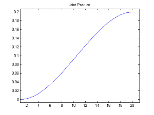
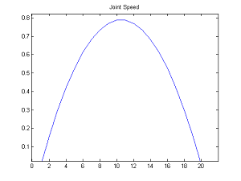
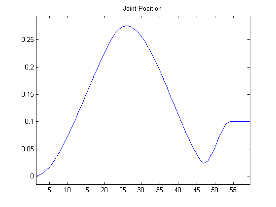
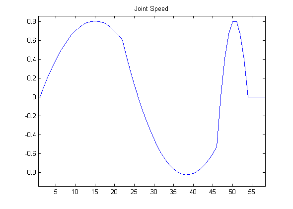

Joint control¶
NAOqi Motion - Overview | API | Tutorial
What it does¶
- There are two ways of controlling a joint or a group of joints:
- animation methods (time fixed, blocking function)
- reactive methods (could be changed every ALMotion cycle, non blocking function)
How it works¶
These API just create a higher level of the DCM actuator control and provide interpolation to have more smooth behavior.
Getting started¶
“Body”, chains and joint names¶
Joints can be controlled:
- individually, using a joint name, or
- in parallel, using a chain of joints or a group of joints like “Body”.
For further details, see: NAO’s Chains.
It is possible to get the list of joints available on your robot using the
ALMotionProxy::getBodyNames method, described in the section:
Case 2: Programmatic access to Joint Names.
Use Cases¶
Case 1: Controlling Joints¶
To control a joint, you need to specify the name of the joint, the target angle in radians, and how fast you want to go to the target angle.
#! /usr/bin/env python
# -*- encoding: UTF-8 -*-
"""Example: Use setAngles Method"""
import qi
import argparse
import sys
import time
import almath
def main(session):
"""
This example uses the setAngles method and setStiffnesses method
in order to control joints.
"""
# Get the service ALMotion.
motion_service = session.service("ALMotion")
motion_service.setStiffnesses("Head", 1.0)
# Simple command for the HeadYaw joint at 10% max speed
names = "HeadYaw"
angles = 30.0*almath.TO_RAD
fractionMaxSpeed = 0.1
motion_service.setAngles(names,angles,fractionMaxSpeed)
time.sleep(3.0)
motion_service.setStiffnesses("Head", 0.0)
if __name__ == "__main__":
parser = argparse.ArgumentParser()
parser.add_argument("--ip", type=str, default="127.0.0.1",
help="Robot IP address. On robot or Local Naoqi: use '127.0.0.1'.")
parser.add_argument("--port", type=int, default=9559,
help="Naoqi port number")
args = parser.parse_args()
session = qi.Session()
try:
session.connect("tcp://" + args.ip + ":" + str(args.port))
except RuntimeError:
print ("Can't connect to Naoqi at ip \"" + args.ip + "\" on port " + str(args.port) +".\n"
"Please check your script arguments. Run with -h option for help.")
sys.exit(1)
main(session)
|  |  |
{kind=link}
{kind=link}
Case 2: Timed Interpolations¶
When you know in advance the trajectory that you want to follow,
the ALMotionProxy::angleInterpolation and ALMotionProxy::angleInterpolationWithSpeed methods can be
used to set up an interpolation.
# Example showing a joint trajectory with a single destination
names = "HeadYaw"
angleLists = 1.0
times = 1.0
isAbsolute = True
proxy.angleInterpolation(names, angleLists, times, isAbsolute)
You can command multiple joints in one command, by using a single time, and a number of target angles equal to the number of joints.
# Example showing a command for the two joints in the 'Head' alias
# 'Head' is expanded to ['HeadYaw','HeadPitch']
names = "Head"
angleLists = [-1.0,-1.0]
times = 1.0
isAbsolute = True
proxy.angleInterpolation(names, angleLists, times, isAbsolute)
The same command can take a list of angles with corresponding times.
# Shake the head from side to side
names = "HeadYaw"
angleLists = [1.0, -1.0, 1.0, -1.0, 0.0]
times = [1.0, 2.0, 3.0, 4.0, 5.0]
isAbsolute = True
proxy.angleInterpolation(names, angleLists, times, isAbsolute)
Similarly, trajectories can be specified for multiple joints.
# Two trajectories in one command. Each trajectory must have a
# corresponding number of times
names = ["HeadYaw", "HeadPitch"]
angleLists = [[1.0, -1.0, 1.0, -1.0], [-1.0]]
times = [[1.0, 2.0, 3.0, 4.0], [ 5.0]]
isAbsolute = True
proxy.angleInterpolation(names, angleLists, times, isAbsolute)
Case 3: Reactive Control¶
The commands ALMotionProxy::setAngles and ALMotionProxy::changeAngles, do not block the calling thread.
This makes them ideal for being called often in reactive control loops, such as
head tracking. You can call them often, with contradictory commands, and motion will
ensure that the trajectory is smooth in position and continuous in velocity.
#! /usr/bin/env python
# -*- encoding: UTF-8 -*-
"""Example: Use setAngles and setStiffnesses Methods"""
import qi
import argparse
import sys
import time
def main(session):
"""
This example uses the setAngles and setStiffnesses methods
in order to simulate reactive control.
"""
# Get the service ALMotion.
motion_service = session.service("ALMotion")
motion_service.setStiffnesses("Head", 1.0)
# Example simulating reactive control
names = "HeadYaw"
angles = 0.3
fractionMaxSpeed = 0.1
motion_service.setAngles(names,angles,fractionMaxSpeed)
# wait half a second
time.sleep(0.5)
# change target
angles = 0.0
motion_service.setAngles(names,angles,fractionMaxSpeed)
# wait half a second
time.sleep(0.5)
# change target
angles = 0.1
motion_service.setAngles(names,angles,fractionMaxSpeed)
time.sleep(3.0)
motion_service.setStiffnesses("Head", 0.0)
if __name__ == "__main__":
parser = argparse.ArgumentParser()
parser.add_argument("--ip", type=str, default="127.0.0.1",
help="Robot IP address. On robot or Local Naoqi: use '127.0.0.1'.")
parser.add_argument("--port", type=int, default=9559,
help="Naoqi port number")
args = parser.parse_args()
session = qi.Session()
try:
session.connect("tcp://" + args.ip + ":" + str(args.port))
except RuntimeError:
print ("Can't connect to Naoqi at ip \"" + args.ip + "\" on port " + str(args.port) +".\n"
"Please check your script arguments. Run with -h option for help.")
sys.exit(1)
main(session)
|  |  |
{kind=link}
{kind=link}
It is also possible to use time with angleInterpolation to do reactive control.
almotion_angleInterpolationReactif.py
#! /usr/bin/env python
# -*- encoding: UTF-8 -*-
"""Example: Use angleInterpolationWithSpeed Method"""
import qi
import argparse
import sys
import time
import almath
def main(session):
"""
This example uses the angleInterpolationWithSpeed method,
more precisely, its effect on reactivity.
"""
# Get the service ALMotion.
motion_service = session.service("ALMotion")
motion_service.setStiffnesses("Head", 1.0)
# Head Start to zeros
names = "Head"
targetAngles = [0.0, 0.0]
maxSpeedFraction = 0.2 # Using 20% of maximum joint speed
motion_service.angleInterpolationWithSpeed(names, targetAngles, maxSpeedFraction)
# Example showing a reactive control with time function angleInterpolation
# Goal: after 1.0 second, retarget from 20 to 50 degree: smooth transition
# Interpolate the head yaw to 20 degrees in 2.0 seconds
# With _async=True, angleInterpolation become non-blocking
names = "HeadYaw"
angleLists = 20.0*almath.TO_RAD
timeLists = 2.0
isAbsolute = True
motion_service.angleInterpolation(names, angleLists, timeLists, isAbsolute, _async=True)
time.sleep(0.5)
# Call getTaskList to have the previous angleInterpolation task number
taskList = motion_service.getTaskList()
# Prepare the next target to 50.0 degrees in 1.0 second
angleLists = 50.0*almath.TO_RAD
timeLists = 1.0
motion_service.angleInterpolation(names, angleLists, timeLists, isAbsolute, _async=True)
time.sleep(0.5)
# Kill the first angleInterpolation (go to 20.0 degrees), the second start
# smoothly from the current joint position and velocity (go to 50 degrees)
motion_service.killTask(taskList[0][1])
time.sleep(2.0)
motion_service.setStiffnesses("Head", 0.0)
if __name__ == "__main__":
parser = argparse.ArgumentParser()
parser.add_argument("--ip", type=str, default="127.0.0.1",
help="Robot IP address. On robot or Local Naoqi: use '127.0.0.1'.")
parser.add_argument("--port", type=int, default=9559,
help="Naoqi port number")
args = parser.parse_args()
session = qi.Session()
try:
session.connect("tcp://" + args.ip + ":" + str(args.port))
except RuntimeError:
print ("Can't connect to Naoqi at ip \"" + args.ip + "\" on port " + str(args.port) +".\n"
"Please check your script arguments. Run with -h option for help.")
sys.exit(1)
main(session)